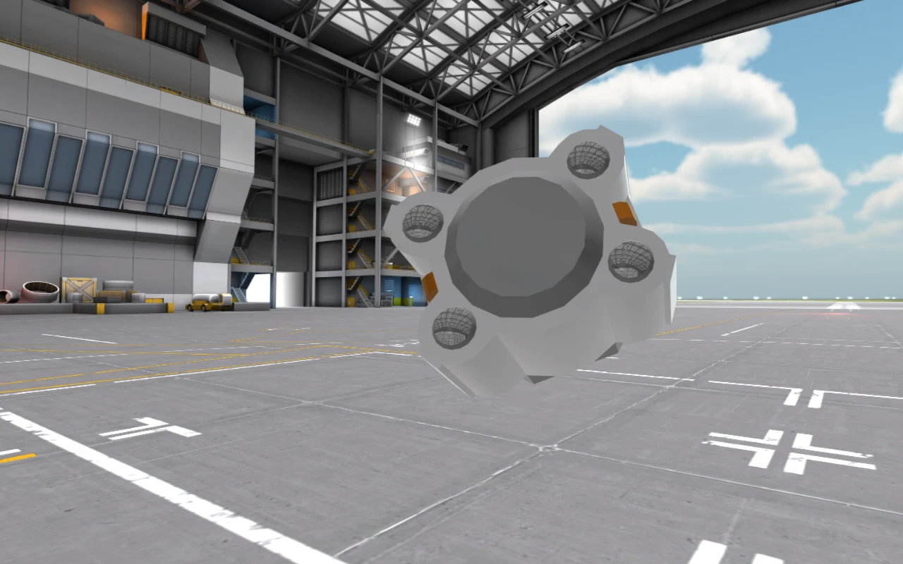
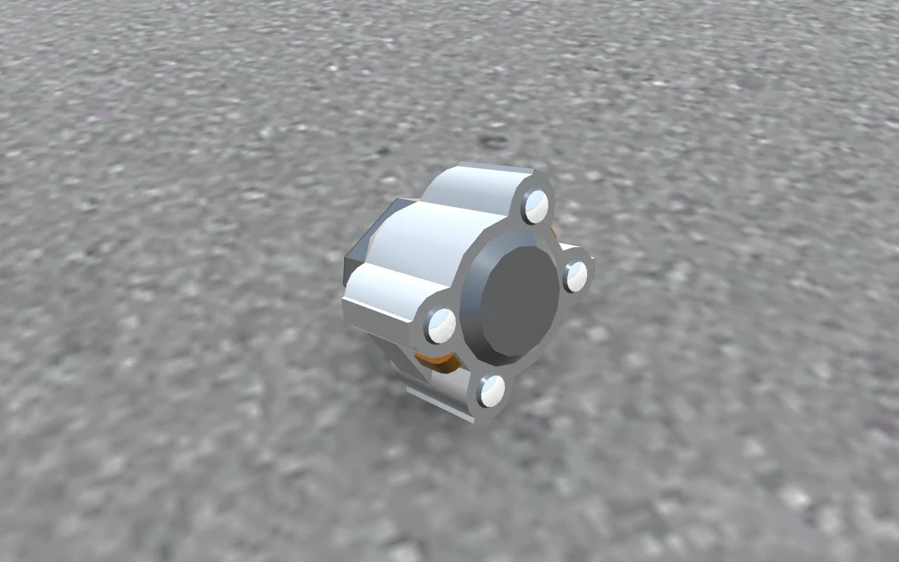

ShineFix home
← Back to supported mods
Infernal Robotics Next - ConnectionSystem
Optics verified
Human tested
Version v1.0.13
Compatibility evidence
Original screenshot gallery
Parts
Utilitron - Grabber

